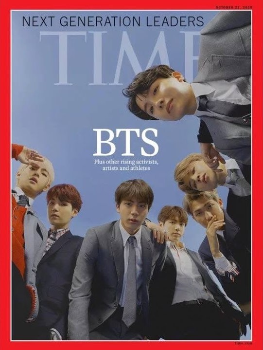
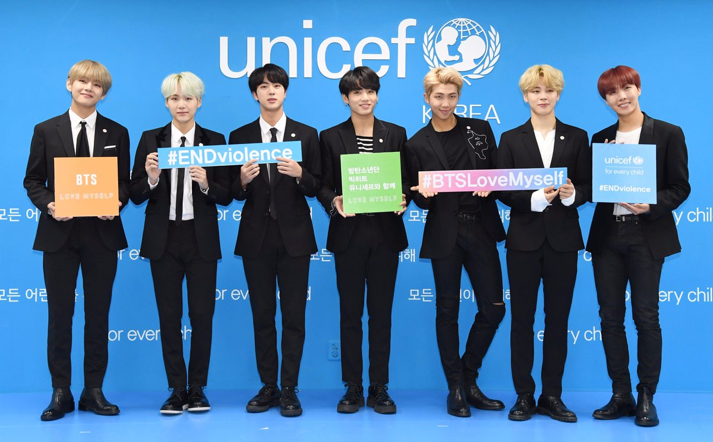

BTS is a K-Pop group, consisting of 7 members RM, Jin, Suga, J-Hope, Jimin, V and Jung Kook. Today, they are one of the biggest boy bands in the world, having won the Top Social Artist award at Billboard Music Award for 3 consecutive years. They have been taking the world by storm with their self-produced, socially aware and wide range genre of music.Their lyrics, touch upon the themes of mental health, troubles of youth, loss, loving oneself, and individualism. Their music has been described as comforting by a lot of people, as it talks about a lot of topics which are taboos or "non-existent" in the society. They also have their own alternate universe storyline. They have been named as Time's Next Generation Leaders.

Message

BTS became the first K-pop group to speak at the United Nations in September 2018, urging people to find their voice.
An exerpt from the speech given by their leader, RM, is as follows:
"Tell me your story. I want to hear your voice, and I want to hear your conviction. No matter who you are, where you’re from, your skin colour, gender identity: speak yourself.
Find your name, find your voice by speaking yourself."
Apart, from this, BTS along with the United Nations Children’s Fund (UNICEF) campaigned against violence toward children and teens around the world, with the hope of making the world a better place through music.
Their music itself gives a lot of messages like loving oneself and taking care of mental health, amongst many others.
Initiatives
Love Myself (campaign)
Love Myself is a anti-violence campaign launched BTS in partnership with UNICEF.The campaign idea was introduced by the group along with #ENDviolence and promotes the hashtag – #BTSLoveMyself, which asks people to post self-loving photos with the hashtag.Love Myself made BTS the first artist in South Korea to raise funds as part of a social fund for global campaigns.“Our Love Myself campaign is all about encouraging every young person to find the love from within themelves and spreading that love to others,” BTS said in a statement. “We want everyone to take part in ending violence by sharing love and kindness.”
Donations
The group (both, individually and as a group) had donated on many ocassions to various organizations such as Sewol Ferry Disaster 4/16 Family Council, UNICEF, Child Fund Korea, Korea Pediatric Cancer Foundation, Busan Metropolitan City Office of Education, Korean Animal Welfare Association, etc. Recently they had also donated $1 million to the
Black Lives Matter (BLM), which encouraged their fans to donate another $1 million to the movement. Also, BTS and their management Big Hit Entertainment donated $1 million to
Live Nation's Crew Nation fund, which was started to support touring and venue crews during this pandemic.
Such acts have continually, encouraged their fans, ARMY, to also donate.
Achievement
A handful international achievements among many
- American Music Awards - Favorite Duo or Group Pop/Rock
- American Music Awards - Favorite Social Artist
- American Music Awards - Tour of the Year
- Billboard Music Awards - Top Duo/Group
- Billboard Music Awards - Top Social Artist
- Nickelodeon Kids' Choice Awards - Favorite Music Group
- Radio Disney Music Awards - Best Music Group
- Radio Disney Music Awards - Global Phenom Award
- Spotify Awards - Most Listened K-pop Artist (Male)
- Teen Choice Awards - Choice International Artist
- Teen Choice Awards - Choice Fandom
State Honours
- Minister of Culture, Sports and Tourism Commendation
- Presidential Commendation
- Hwagwan Order of Cultural Merit (5th class)
- Youngest Recipients
Listicles
- Forbes - Korea Power Celebrity
- Forbes - 30 Under 30 (Asia)
- Forbes - Korea Power Celebrity (1st)
- Time - Next Generation Leaders
- Time - 25 Most Influential People on the Internet
- Time - Time 100